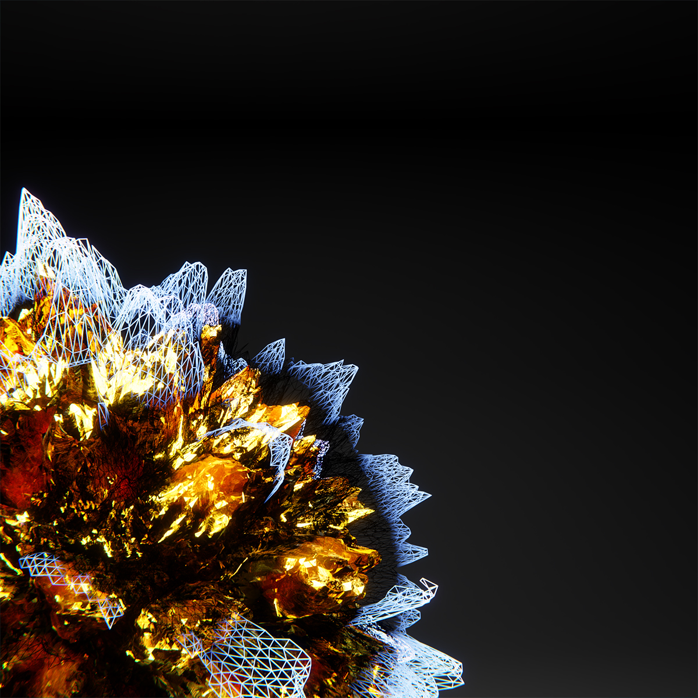
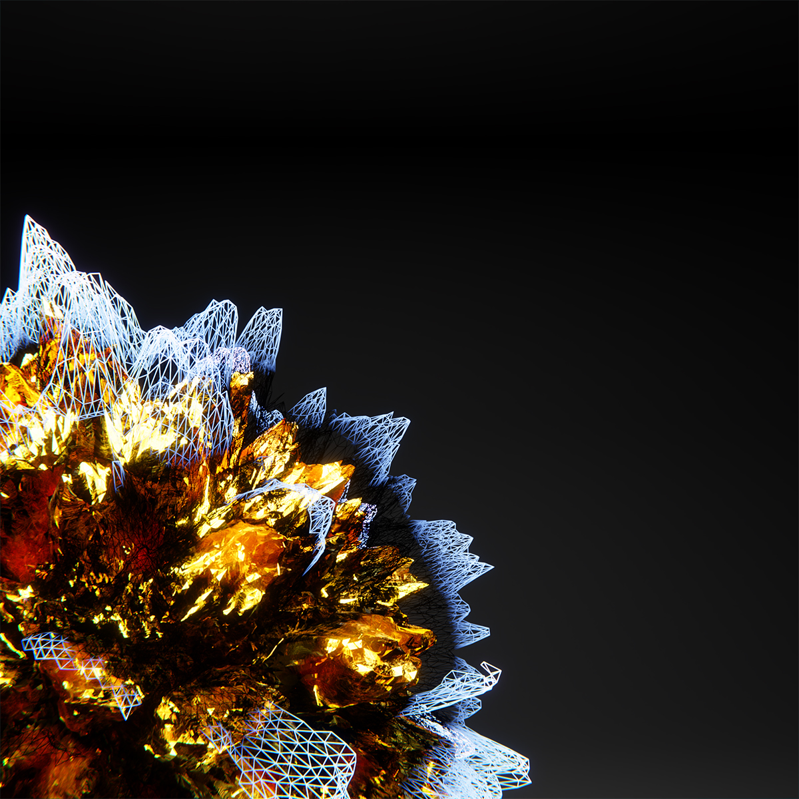

Breathing
Breathing nasce dalla sperimentazione di forme generate proceduralmente in 3D. Durante la pandemia il “respiro” è sempre stato al centro dell’attenzione, sia a livello salutare sia a livello sociale, la quarantena ci ha fatto “mancare il respiro”. Breathing non ha forme che rimandano ad un essere animato, ma non per questo, non è in grado di respirare. Breathing è una raffigurazione di questa difficoltà a respirare che alcuni di noi hanno sperimentato.
 
